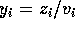
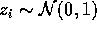
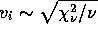
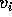
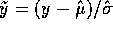
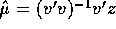
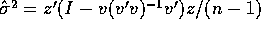
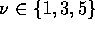
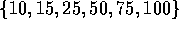
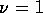

In this Section we report on a brief Monte Carlo experiment designed to evaluate the performance of the Falstaff estimator of location. We limit the choice of error densities to the Student t family in order to exploit a simple normal/independent variance reduction technique. Instead of simply simply generating t-variates and directly computing mean squared errors of the estimators we generate observations from the model

for
and
. This enables us to compute the optimal (weighted least squares) estimator conditional of the
's. Since this estimator as a known distribution we can remove this source of variability from the Monte Carlo and focus on the departure of our estimators from this idealized, but obviously unattainable estimator. This is most easily accomplished by replacing the realized n-vector y by the standardized vector
where
and
. See, e.g. Simon (1976) for further details.We consider three choices of the degrees of freedom parameter of the t-distribution:

and six choices of the sample size
. The coefficient of kurtosis is unbounded for the t(1) and t(3) distributions, and equals 9 for the t(5). For each configuration we consider 9 versions of the the Falstaff estimator with the q-dimension of the augmentation matrix varying from 0 to 8. Obviously, q=0 provides the benchmark, ordinary least squares estimator against which we will compare the performance of the other estimators. For each configuration the augmentation matrix, D, is generated as iid from the standard normal distribution. And 10,000 replications are done for each configuration.Figure 1 presents the results of the simulation. Columns of the array of figures correspond to the three t distributions, and rows to the six sample sizes. The horizontal line in each figure represents performance of the sample mean, corresponding to the Falstaff estimator with q=0. The curve plotted in each panel represents the performance, measured by mean squared error, of the other Falstaff estimators relative to the sample mean for each configuration. The vertical bars represent 95 percent confidence intervals for the point estimates represented by the curve. When the line drops below the horizontal line it indicates improvement in performance over that of the sample mean. Thus, for the Cauchy,

, cases there is dramatic improvement over the entire range of q simulated in the experiment. For the Student on 3 degrees of freedom configurations, there is improvement for modest q when the sample size is small, and improvement over the entire range when the sample size is larger. In the last column of the array, corresponding to the Student on 5 degrees of freedom, the results show no improvement from the Falstaff estimator for the smallest sample sizes, 10 and 15, slight improvement at n=25 for q=2, and significant improvement for the larger sample sizes, for moderate q. These results confirm the theoretical conclusions of the second-order asymptotics, and also indicate that the choice of an optimal q is rather delicately tied to the degree of non-normality of the error density and the sample size. See Koenker and Machado (1996) for a more serious theoretical consideration of this aspect of the GMM problem.